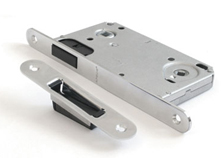

Услуги
Услуги по подготовке дверей к установке
Только для серии X,cерии U, серии L
Предложение по пред установочной заводской подготовке дверного блока со скрытыми петлями
В подготовку входят виды работ:
- Врезка петель на полотне.
- Врезка петель на дверной коробке
- Врезка замка на полотне.
- Врезка ответной планки на коробке.
- Подрезка коробки под угол 45 градусов.
- Засверливание отверстий под конфирматы.
Дверной блок комплектуется фурнитурой:
Конфирматы для сборки дверной коробки
Магнитный замок - Magn 2090
(латунь блестящая, никель матовый)

Петля скрытая
Стоимость подготовки с учетом фурнитуры составляет
4 500 Р
Предложение по пред установочной заводской подготовке дверного блока со скрытыми петлями
В подготовку входят виды работ:
- Врезка петель на полотне.
- Врезка петель на дверной коробке
- Врезка замка на полотне.
- Врезка ответной планки на коробке.
- Подрезка коробки под угол 45 градусов.
- Засверливание отверстий под конфирматы.
Дверной блок комплектуется фурнитурой:
Конфирматы для сборки дверной коробки
Магнитный замок - Magn 2090
(латунь блестящая, никель матовый)
Петля универсальная Петля Renz 100х75х2,5 универ
4 подшипника
Стоимость подготовки с учетом фурнитуры составляет
4 500 Р